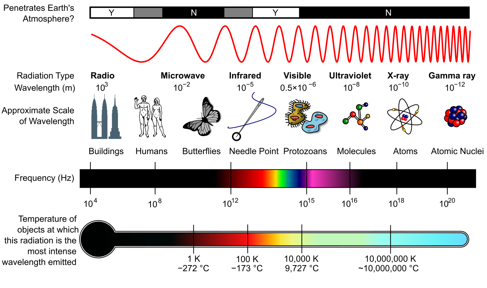
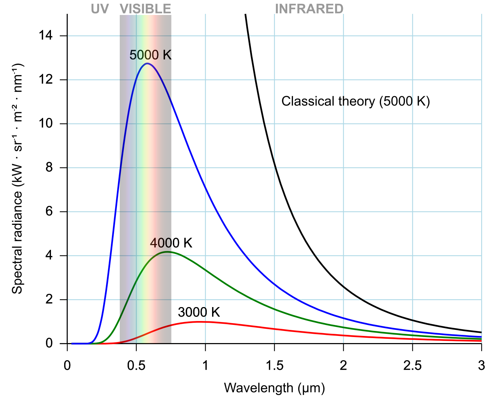
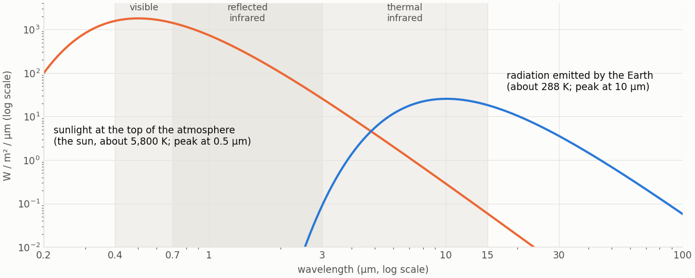
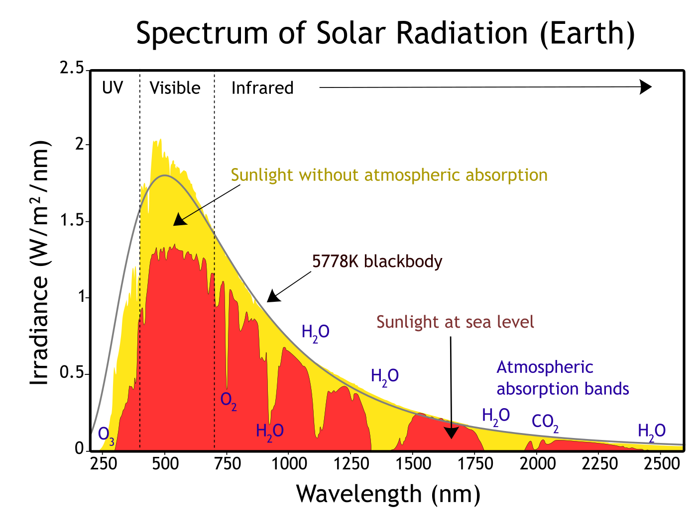

Chapter 1 of Remote sensing.
Radiation measured by a satellite has travelled a long way: from its source (the sun, or the Earth itself), down through the atmosphere, to a surface that absorbs part of it and reflects the rest, and up through the atmosphere again to the sensor. This chapter follows that path. It ends with the atmosphere, which is a problem when you want to see the surface and the subject when you want to measure the air.
Electromagnetic waves
Remote sensing needs energy that the target reflects or emits: electromagnetic radiation. It consists of an electrical field, which varies in strength perpendicular to the direction the radiation travels, and a magnetic field at right angles to the electrical field. Both travel at the speed of light, c = 2.998 × 10⁸ m/s.
Two properties matter most for remote sensing: the wavelength λ (in metres) and the frequency f (cycles per second). They are related by
c = f × λ
so a shorter wavelength means a higher frequency. Radiation also comes in packets, photons, and the energy of each photon grows with the frequency:
E = h × f = h × c / λ (h = 6.626 × 10⁻³⁴ J s, Planck’s constant)
A photon of blue light carries more energy than one of red light, and much more than one of thermal infrared. That decides what radiation can do when it meets matter: ultraviolet photons can break molecules apart, visible photons can drive photosynthesis, and infrared photons can only make molecules vibrate and rotate, that is, warm them.
The electromagnetic spectrum
The whole range of wavelengths is the electromagnetic spectrum, from gamma rays shorter than an atom to radio waves longer than a building. It is divided into regions by wavelength; the boundaries are approximate, and neighbouring regions overlap.

The electromagnetic spectrum, from long waves on the left to short on the right: whether the radiation gets through the atmosphere (top), its type and wavelength compared with familiar objects, its frequency, and the temperature of a body whose emission peaks at that wavelength. Figure: Inductiveload, NASA, CC BY-SA 3.0, via Wikimedia Commons.

The top row shows why only part of the spectrum is useful for observing the Earth: the atmosphere lets through visible light, some infrared and radio waves, and blocks the rest. The bottom row links wavelength to temperature: hot bodies emit short waves, cold bodies long waves (see the next section).
The regions used in remote sensing:
| Region | Wavelength | In remote sensing |
|---|---|---|
| Gamma rays, X-rays | < 0.01 µm | absorbed high in the atmosphere; not used for Earth observation |
| Ultraviolet (UV) | 0.01–0.4 µm | mostly absorbed by ozone; used to measure ozone and other gases |
| Visible | 0.4–0.7 µm | reflected sunlight: colour, water, vegetation |
| Near and short-wave infrared (NIR, SWIR) | 0.7–3 µm | reflected sunlight: vegetation, moisture, minerals, and the absorption bands of CO₂ and CH₄ |
| Mid- and long-wave infrared | 3–15 µm | radiation emitted by the surface: temperature |
| Microwaves | 1 mm–1 m | radar, which sends its own signal and sees through clouds (see radar sensors); also weak natural emission, for soil moisture and sea ice |
Units: 1 µm = 0.001 mm = 1,000 nm.
Visible light, about 0.4–0.7 µm, is the narrow band the human eye sees:
| Colour | Wavelength (µm) |
|---|---|
| Violet | 0.40–0.43 |
| Indigo | 0.43–0.45 |
| Blue | 0.45–0.50 |
| Green | 0.50–0.57 |
| Yellow | 0.57–0.59 |
| Orange | 0.59–0.61 |
| Red | 0.61–0.70 |
Infrared, 0.7–300 µm, is divided further:
| Region | Wavelength (µm) | |
|---|---|---|
| Near infrared (NIR) | 0.7–1.5 | reflected infrared: the infrared part of sunlight reflected by the surface |
| Short-wave infrared (SWIR) | 1.5–3 | reflected infrared |
| Mid-wave infrared (MWIR) | 3–8 | thermal infrared: radiation emitted by the surface, from which surface temperature is calculated |
| Long-wave infrared (LWIR) | 8–15 | thermal infrared |
| Far infrared (FIR) | > 15 |
Sources: the sun and the Earth as black bodies
Every body warmer than absolute zero emits radiation. A black body is the ideal case: it absorbs all radiation that falls on it and emits the most a body of its temperature can. Its spectrum depends only on its temperature, as described by Planck’s law:

The spectrum of a black body at 3,000, 4,000 and 5,000 K. The black curve is the classical (Rayleigh–Jeans) theory that Planck’s law replaced. Figure: Darth Kule, public domain, via Wikimedia Commons.

Two rules follow from Planck’s law:
- Wien’s displacement law: the wavelength of the peak is inversely proportional to the temperature, λ_max ≈ 2,898 µm K / T. The hotter the body, the shorter the wavelength at which it emits most. A stove plate goes from dark to red to orange as it heats.
- Stefan–Boltzmann law: the total energy emitted grows with the fourth power of the temperature, M = σT⁴ (σ = 5.67 × 10⁻⁸ W m⁻² K⁻⁴). Twice the temperature gives sixteen times the energy.
The sun and the Earth are close enough to black bodies for these laws to explain why remote sensing has two kinds of passive sensor:

Sunlight arriving at the top of the atmosphere (a 5,778 K black body, diluted by the distance to the sun) and radiation emitted by the Earth’s surface (a 288 K black body), calculated from Planck’s law. Both axes are logarithmic.
- The sun, at about 5,800 K, peaks at about 0.5 µm, in visible green light. At the top of the atmosphere it delivers about 1,361 W/m², the solar constant.
- The Earth, at about 288 K (15 °C), peaks at about 10 µm, in the thermal infrared, and emits about 390 W/m².
- The two curves cross at about 4–5 µm. Below that, a sensor sees reflected sunlight; above it, radiation emitted by the surface itself. That is why optical sensors measure reflectance and thermal sensors measure temperature, and why thermal images can be taken at night.
Solar radiation at the surface
The sunlight that reaches the ground is not a smooth black-body curve. On its way down, the atmosphere has absorbed and scattered part of it, and some wavelengths are almost gone:

Sunlight at the top of the atmosphere (yellow) and at sea level (red), with a 5,778 K black body for comparison. The gaps in the red area are absorption bands of ozone, oxygen, water vapour and carbon dioxide. Figure: Robert A. Rohde, Global Warming Art, CC BY-SA 3.0, via Wikimedia Commons.

At noon on a clear summer day about 1,000 W/m² reaches the ground; over a year in Denmark, about 1,000 kWh/m². The incoming solar radiation is itself a mapped quantity. It is estimated from geostationary weather satellites, which see the clouds every 15 minutes, and used to plan solar energy (for example the Copernicus Atmosphere Monitoring Service’s solar radiation data and the EU’s PVGIS), to model evaporation and crop growth, and to study urban heat.
Spectral reflectance
Radiation that reaches a surface is transmitted, absorbed or reflected. Optical remote sensing is concerned with the reflected part, because that is what the sensor measures. How much is reflected depends on the material and on the wavelength. The reflectance of a material is the fraction of the incoming radiation that it reflects, from 0 (nothing) to 1 (everything). Reflectance across many wavelengths is the material’s spectral signature (see Spectral signatures and vegetation indices).
Reflectance is a ratio: dividing what the surface reflects by what reaches it removes the shape of the solar spectrum, so a surface has the same reflectance in the morning and at noon, in Denmark and in Spain. That is why images are converted to reflectance before they are compared (see Digital images and reflectance).
Radiation and plants: photosynthesis and the red edge
The most important thing radiation does at the Earth’s surface is drive photosynthesis. Plants use light between 0.4 and 0.7 µm, the same band the eye sees, called photosynthetically active radiation (PAR). Its photons have the right energy to excite chlorophyll: ultraviolet photons carry so much energy that they damage cells, and infrared photons carry too little to drive the reaction.
Each part of the leaf’s spectral signature has a physical cause (the absorption spectra of the chlorophylls are shown in the NDVI note):
- Blue and red are absorbed. Chlorophyll a and b absorb most strongly around 0.43–0.45 µm (blue) and 0.64–0.68 µm (red). A healthy leaf reflects only a few percent of red light.
- Green is absorbed less and partly reflected, which is why leaves look green.
- Near infrared is reflected. The photons are of no use for photosynthesis, and absorbing them would only heat the leaf. Instead they are scattered at the boundaries between cell walls and air spaces inside the leaf, the mesophyll, and about half is reflected. Several layers of leaves reflect even more.
- The red edge is the steep rise between the two, from about 0.68 to 0.75 µm, where chlorophyll’s absorption stops and the leaf’s scattering takes over.
The red edge is sensitive to the plant’s condition. Its steepest point, the red-edge position, lies at about 0.70–0.73 µm and moves to longer wavelengths as the chlorophyll content rises: in a dense, well-fertilised crop the absorption band is broader and the edge shifts towards the infrared. In stressed, diseased or senescent vegetation, chlorophyll declines, red reflectance rises, near-infrared reflectance falls, and the edge flattens and shifts towards shorter wavelengths. These changes can show up before the plant looks different to the eye.
Sensors and the red edge. A sensor with one red and one near-infrared band, like most older ones, measures on either side of the edge but not on it. Sentinel-2 has three narrow bands on the edge itself: B5 (705 nm), B6 (740 nm) and B7 (783 nm), at 20 m resolution, between red (B4, 665 nm) and near infrared (B8, 842 nm, and B8A, 865 nm). They are used for red-edge indices of chlorophyll and nitrogen (see red-edge indices), which stay sensitive in dense vegetation where NDVI saturates.
Fluorescence. A small part of the light chlorophyll absorbs, about 1–2%, is given off again as a faint red and far-red glow, peaking at about 0.685 and 0.74 µm. This solar-induced fluorescence (SIF) comes from photosynthesis itself rather than from the leaf’s structure, so it says more directly how actively plants are working. It is far weaker than the reflected sunlight and can be measured only in narrow wavelengths where there is almost no sunlight to drown it: absorption lines of the sun’s own atmosphere, and oxygen’s band at 0.76 µm. It is measured by the greenhouse-gas satellites described below, and ESA’s FLEX mission is built for it.
The atmosphere between source and sensor
What the sensor receives
A satellite sensor looking down records a sum of several kinds of radiation:
- Sunlight reflected by the surface in the pixel, weakened by the atmosphere twice, on the way down and on the way up. This is usually what we want.
- Path radiance: sunlight scattered towards the sensor by the atmosphere before it ever reached the ground. It adds brightness, most in blue, and makes images look hazy.
- Light from neighbouring surfaces, scattered into the pixel’s line of sight: a dark lake next to bright fields looks brighter at its edges than it is (the adjacency effect).
To study the surface, the atmosphere’s contribution has to be estimated and removed: atmospheric correction, the step from top-of-atmosphere to surface reflectance (see top-of-atmosphere and surface reflectance). To study the atmosphere, the same physics is used the other way round: the surface is the background, and what the atmosphere has taken out or added is the measurement. Either way, the atmosphere’s two effects, scattering and absorption, have to be told apart from the surface.
Scattering
On its way through the atmosphere radiation is absorbed or scattered by gases and particles. Absorption turns the radiation’s energy into energy of the molecules; scattering sends it off in all directions. Both take energy out of the beam.
- Rayleigh scattering is caused by gas molecules and particles much smaller than the wavelength. It depends strongly on wavelength, roughly as 1/λ⁴: blue light at 0.45 µm is scattered about four times as much as red at 0.65 µm. It is why the sky is blue, and why sunsets are red: with the sun low, light travels a longer path through the atmosphere, the blue is scattered away, and more of the red reaches the ground.
- Mie scattering is caused by aerosols, such as pollen, dust, smoke, sea salt and water droplets in the lower atmosphere, that are about as large as the wavelength or larger. It varies from day to day and place to place, and is the hardest part of atmospheric correction to estimate.
- Non-selective scattering is caused by particles much larger than the wavelength, such as cloud droplets. It affects all wavelengths alike, which is why clouds are white.
Absorption by gases
Each gas absorbs radiation in its own wavelength bands, set by how its molecules vibrate and rotate. The bands are the gas’s fingerprint:
| Gas | Main absorption bands | Consequence |
|---|---|---|
| Ozone (O₃) | below 0.32 µm; 9.6 µm | blocks most ultraviolet; measured in the UV |
| Oxygen (O₂) | 0.69 and 0.76 µm (the A-band) | its amount is known, so the depth of the band gives the length of the light’s path, and the height of clouds |
| Water vapour (H₂O) | 0.94, 1.13, 1.38, 1.87 and 2.7 µm; 6.3 µm; much of the far infrared | the largest and most variable absorber; the gaps in the solar spectrum above |
| Carbon dioxide (CO₂) | 1.6, 2.0, 4.3 and 15 µm | the 15 µm band absorbs the Earth’s own emission: the greenhouse effect |
| Methane (CH₄) | 1.65, 2.3, 3.3 and 7.7 µm | measured from space in the SWIR |
| Nitrogen dioxide (NO₂) | 0.4–0.5 µm | a marker of combustion: traffic, industry, shipping |
Atmospheric windows
Only the regions between the main absorption bands can be used to observe the Earth’s surface. These atmospheric transmission windows lie in the visible, the near infrared, parts of the short-wave infrared (around 1.6 and 2.2 µm), the thermal infrared between about 8 and 14 µm, and the microwave region. Sensors built to observe the land place their bands inside them.
The thermal window is also part of the climate system. The atmosphere lets most sunlight through but absorbs much of the Earth’s own thermal radiation outside the 8–14 µm window, and sends part of it back down: the greenhouse effect. More CO₂ and CH₄ absorb more of the Earth’s emission at the edges of the window, which is why their concentrations are monitored so closely.
Effects on images
- Absorption weakens both the incoming sunlight and the reflected radiation, by an amount that varies with wavelength and with the amount of water vapour, and so alters the measured spectral signature of the target.
- Scattering matters most in the visible and near infrared. It adds path radiance and lowers contrast. The effect is strongest in blue light.
Sentinel-2 carries three bands that are there to measure the atmosphere rather than the surface, so that it can be corrected:
| Band | Wavelength | Measures |
|---|---|---|
| B1 | 443 nm | aerosols, where scattering is strong |
| B9 | 945 nm | water vapour, inside its absorption band |
| B10 | 1,375 nm | cirrus: the water vapour band is so deep that the surface is invisible, and only high, thin ice clouds above most of the vapour show up |
The bands in the windows see the surface; the bands in the absorption bands see the atmosphere. Comparing the two is the basis both of atmospheric correction and of measuring gases.
Measuring the atmosphere itself
Turned around, the absorption bands become the measurement. A sensor that splits sunlight reflected from the surface into thousands of narrow wavelengths, a spectrometer, can see how deep each gas’s bands are, and from that how much of the gas lies along the path from the sun to the ground and up to the satellite. Oxygen, whose amount is known, gives the length of that path, so the measurement can be expressed as a concentration.
- Air quality. Sentinel-5 Precursor, with the TROPOMI instrument (launched 2017), maps NO₂, ozone, SO₂, CO, formaldehyde and aerosols every day, worldwide, at about 5.5 × 3.5 km. It shows the NO₂ from traffic in cities and from shipping lanes in the North Sea, and its drop during the 2020 lockdowns. Sentinel-4, in geostationary orbit over Europe, and Sentinel-5, on the MetOp-SG weather satellites, continue the work.
- Methane (CH₄). TROPOMI maps methane worldwide in the 2.3 µm band. Large single sources, such as leaking gas installations, landfills and coal mines, can be found as plumes. Even Sentinel-2, built for land, can see the largest plumes: methane absorbs much more in band B12 (2,190 nm) than in B11 (1,610 nm), so a plume appears as a local dip in B12 relative to B11.
- Carbon dioxide (CO₂). CO₂ is harder: it is already about 420 parts per million everywhere, and a power plant or a city adds less than one percent to the column above it. Satellites built for it, Japan’s GOSAT (2009) and NASA’s OCO-2 (2014), use the 1.6 and 2.0 µm bands and the oxygen A-band, with a precision of about 1 ppm. The Copernicus CO2M mission is planned to map emissions from cities and power plants.
These are atmosphere products, not images of the surface: their pixels are kilometres wide, and clouds hide what is below. Like surface reflectance, they are delivered as calibrated, corrected products, and the work is in choosing the right one and understanding what its pixels mean.
The sections on waves, the spectrum, reflectance and scattering draw on the tutorial Fundamentals of Remote Sensing by the Canada Centre for Mapping and Earth Observation (Natural Resources Canada). Figures from Wikimedia Commons as credited; the sun-and-Earth figure is calculated from Planck’s law.